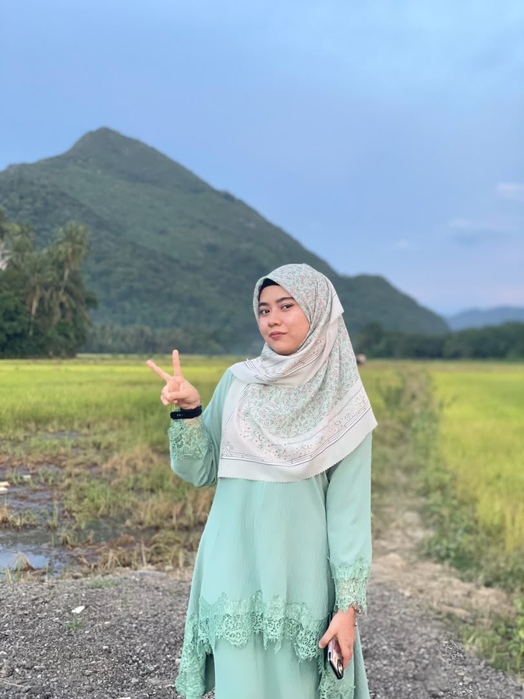
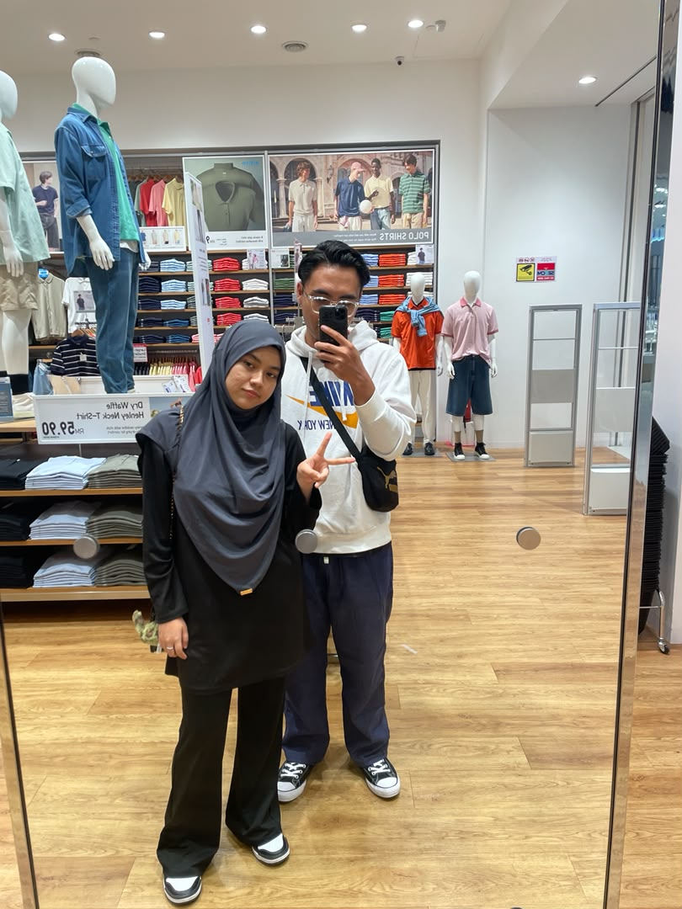
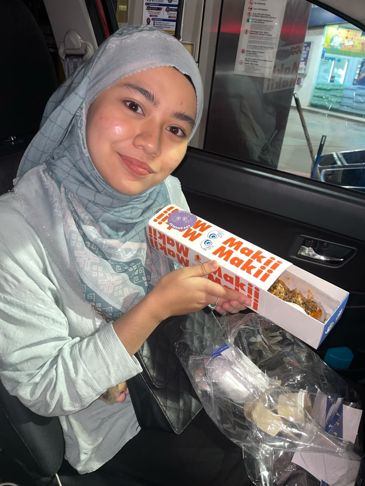

Dear Nurafiqah,
In a world that moves so quickly, you are the feeling I never want to rush past.
Scroll gently — there is more for you below
Every second matters
Time since you became part of my heart
Every second is not just time passing — it is another small piece of a story I am grateful to have with you.
From my heart
The reasons my heart holds on to you
These are not only reasons to admire you. They are the quiet truths I carry whenever I think of Nurafiqah. Tap each card to read more.
Our story
Memories, feelings, and everything in between
Not every important moment needs a photograph. Some live forever in the way they changed us.
Captured feelings
Little pieces of a story I never want to forget
Every photo holds more than an image. It holds a feeling, a moment, and another reason I am grateful that Nurafiqah exists in my life.



A memory in motion
A moment I can replay whenever I miss you
Some memories deserve more than a photograph. They deserve to move, to laugh, and to keep their little sounds forever.
A small piece of time that will always feel special because you are in it.
One last thing
Nurafiqah, will you keep making beautiful memories with me?
I do not need every day to be perfect. I only hope we keep choosing honesty, softness, laughter, and each other through every version of life.
Yours, Your Name ♥